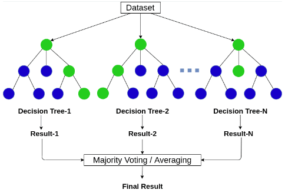

I. Tổng quan Ensemble và Bagging
Trước khi đi vào Random Forest, bạn đọc hãy đọc 2 bài viết trước về Decision Tree và Ensemble learning để hiểu hơn về kĩ thuật và các chỉ số đo độ tinh khiết của các mô hình cây. Ensemble kết hợp nhiều mô hình yếu để tạo mô hình mạnh. Bagging (Bootstrap Aggregating) là một kỹ thuật ensemble quan trọng, trong đó các mô hình được huấn luyện song song trên các tập bootstrap và kết hợp bằng voting hoặc trung bình. Random Forest chính là Bagging kết hợp với Random Subspace Method (chọn ngẫu nhiên tập con các đặc trưng tại mỗi nút). Chi tiết về Bagging và Boosting có thể xem trong bài Ensemble Learning: Bagging và Boosting.
II. Định nghĩa Random Forest
Random Forest là gì?
Random Forest là phương pháp học tập hợp xây dựng một số lượng lớn các cây quyết định (decision trees) trên các tập bootstrap khác nhau, đồng thời tại mỗi nút chỉ xét một tập con ngẫu nhiên các đặc trưng. Dự đoán cuối cùng là kết hợp kết quả từ tất cả các cây (bỏ phiếu đa số cho phân loại, trung bình cho hồi quy).

Thuật toán được huấn luyện với hai nguồn ngẫu nhiên:
- Bootstrap sampling: Mỗi cây được huấn luyện trên một tập con dữ liệu lấy mẫu có hoàn lại từ tập gốc.
- Random subspace: Tại mỗi nút, thay vì xét toàn bộ \(M\) đặc trưng, chỉ chọn ngẫu nhiên \(m\) đặc trưng (\(m \ll M\)) để tìm phân tách tốt nhất.
Nhờ đó các cây trở nên đa dạng, giảm tương quan, tăng độ chính xác tổng thể.
III. Nguyên tắc hoạt động
Random Forest hoạt động qua các bước sau:
1. Xây dựng rừng (huấn luyện)
- Tạo bootstrap samples: Với \(K\) cây, tạo \(K\) tập con bằng bootstrap từ tập huấn luyện gốc.
- Huấn luyện từng cây:
- Mỗi cây được phát triển mà không cắt tỉa (max depth).
- Tại mỗi nút, chọn ngẫu nhiên \(m\) đặc trưng (thường \(m = \sqrt{M}\) cho phân loại, \(m = M/3\) cho hồi quy).
- Chọn đặc trưng và ngưỡng phân tách tốt nhất dựa trên độ đo (Gini, Entropy cho phân loại; phương sai cho hồi quy – chi tiết xem bài Decision Tree).
- Lặp lại cho đến khi dừng (số mẫu < min_samples_split hoặc tinh khiết).
2. Dự đoán với rừng
Sau khi huấn luyện xong K cây quyết định độc lập, Random Forest kết hợp dự đoán của chúng để đưa ra kết quả cuối cùng. Cách kết hợp phụ thuộc vào loại bài toán:
-
Đối với phân loại (Classification):
- Mỗi cây trong rừng thực hiện "bỏ phiếu" (voting) cho một lớp. Cụ thể, cây sẽ đưa ra nhãn lớp dự đoán dựa trên các đặc trưng đầu vào.
- Hai hình thức bỏ phiếu phổ biến:
- Hard voting (bỏ phiếu cứng): Mỗi cây chỉ được một phiếu cho lớp mà nó dự đoán. Lớp nào nhận được nhiều phiếu nhất sẽ là kết quả cuối cùng. Ví dụ: 100 cây, 60 cây dự đoán "chó", 30 cây dự đoán "mèo", 10 cây dự đoán "chim" → kết quả là "chó".
- Soft voting (bỏ phiếu mềm): Nếu cây có khả năng xuất ra xác suất (ví dụ cây phân loại dùng xác suất hậu nghiệm), ta có thể lấy tổng (hoặc trung bình) xác suất dự đoán từ các cây, sau đó chọn lớp có tổng xác suất cao nhất. Cách này thường cho kết quả mượt mà và chính xác hơn.
- Xử lý khi có hòa phiếu: Nếu hai hoặc nhiều lớp nhận cùng số phiếu cao nhất, Random Forest có thể chọn lớp đầu tiên theo thứ tự, hoặc tăng thêm số lượng cây để giảm khả năng hòa.
-
Đối với hồi quy (Regression):
- Mỗi cây trong rừng trả về một giá trị số thực (giá trị dự đoán) dựa trên các đặc trưng đầu vào.
- Kết quả cuối cùng thường là giá trị trung bình (mean) của tất cả các dự đoán từ các cây:
\[ \hat{y}_{\text{forest}} = \frac{1}{K} \sum_{k=1}^{K} \hat{y}_{\text{tree}_k} \]
- Một số biến thể có thể dùng trung vị (median) thay vì trung bình để tăng tính ổn định trước các outlier (giá trị ngoại lai) từ một vài cây.
- Ví dụ: 100 cây, dự đoán lần lượt các giá trị: 2.5, 3.0, 2.8, …, 3.1. Giá trị trung bình của 100 số đó sẽ là dự đoán cuối cùng.
Nhờ cơ chế kết hợp này, Random Forest giảm được phương sai (variance) so với một cây đơn lẻ, ít bị overfitting hơn, và thường đạt độ chính xác cao.
3. Đánh giá Out-of-Bag (OOB)
Trong Random Forest, mỗi cây được huấn luyện trên một tập bootstrap (lấy mẫu có hoàn lại) từ tập dữ liệu gốc. Một tính chất thú vị của bootstrap là: với tập dữ liệu có \(n\) mẫu, xác suất để một mẫu cụ thể không được chọn trong một lần lấy mẫu là \(1 - \frac{1}{n}\). Sau \(n\) lần lấy (có hoàn lại), xác suất để mẫu đó không xuất hiện trong tập bootstrap là:
Điều này có nghĩa là mỗi cây chỉ sử dụng khoảng 63.2% số mẫu gốc để huấn luyện, 36.8% số mẫu còn lại (gọi là Out-of-Bag samples – OOB) không được dùng để xây dựng cây đó. Các mẫu OOB đóng vai trò như một tập kiểm tra tự nhiên, không cần phải tách riêng tập validation.
Cách tính OOB error:
- Với mỗi mẫu \( (x_i, y_i) \) trong tập dữ liệu gốc, xác định tất cả các cây mà mẫu này không xuất hiện trong tập bootstrap của chúng (tức là cây chưa từng thấy mẫu này).
- Cho mỗi cây đó dự đoán trên \(x_i\) (bỏ phiếu cho phân loại, giá trị số cho hồi quy).
- Kết hợp các dự đoán này (majority voting cho phân loại, trung bình cho hồi quy) để thu được dự đoán OOB cho mẫu \(i\).
- Sau khi làm tương tự cho tất cả các mẫu, OOB error được tính là tỷ lệ dự đoán sai (đối với phân loại) hoặc MSE/MAE (đối với hồi quy) trên các mẫu OOB.
Ưu điểm của OOB so với cross-validation thông thường:
- Miễn phí tính toán: Không cần chạy lại nhiều lần huấn luyện như k-fold cross-validation.
- Không làm giảm kích thước tập huấn luyện: Toàn bộ dữ liệu vẫn được dùng để huấn luyện từng cây (mỗi cây thiếu một phần khác nhau).
- Ước lượng khách quan: OOB error thường rất gần với lỗi trên tập kiểm tra độc lập, và có thể dùng để chọn siêu tham số (số lượng cây, max_features, v.v.).
Trong thực hành, nếu tập dữ liệu lớn, bạn có thể chỉ cần dùng OOB error để đánh giá chất lượng mô hình mà không cần tách riêng tập validation. Thư viện scikit-learn cho phép tính OOB error bằng cách đặt tham số oob_score=True khi khởi tạo RandomForestClassifier hoặc RandomForestRegressor.
4. Độ quan trọng của đặc trưng (Feature Importance)
Random Forest cung cấp hai cách đo:
- Mean Decrease Impurity (MDI): Tổng mức giảm Gini (hoặc Entropy) do một đặc trưng gây ra, trung bình trên tất cả cây.
- Mean Decrease Accuracy (MDA): Xáo trộn ngẫu nhiên giá trị của một đặc trưng trong OOB và đo độ giảm độ chính xác. Giảm càng nhiều thì đặc trưng càng quan trọng.
Tham số quan trọng trong Random Forest (scikit-learn)
n_estimators: Số cây (càng nhiều càng tốt, nhưng chậm).max_features: Số đặc trưng xét tại mỗi nút (mặc định sqrt(n_features) cho phân loại).max_depth: Độ sâu tối đa của cây (None: phát triển hết cỡ).min_samples_split: Số mẫu tối thiểu để split một nút.bootstrap: Có dùng bootstrap hay không (mặc định True).oob_score: Có tính OOB error không.
IV. Kết luận
Random Forest là một thuật toán mạnh mẽ, dễ sử dụng, ít cần điều chỉnh tham số và thường đạt độ chính xác cao trong nhiều bài toán thực tế. Nó kết hợp thành công bagging và random subspace để giảm phương sai và tăng tính đa dạng giữa các cây. Tuy nhiên, khi số cây lớn, mô hình có thể tốn bộ nhớ và chậm dự đoán. Nếu cần độ chính xác cao hơn nữa, bạn có thể thử Gradient Boosting (XGBoost, LightGBM).
Bài tiếp theo sẽ giới thiệu về Gradient Boosting.